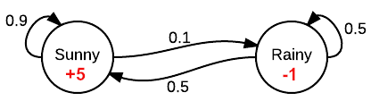

The Markov Property, Chain, Reward Process and Decision Process
As seen in the previous article, we now know the general concept of Reinforcement Learning. But how do we actually get towards solving our third challenge: “Temporal Credit Assignment”?
To solve this, we first need to introduce a generalization of our reinforcement models. When we look at these models, we can see that we are modeling decision-making situations where the outcomes of these situations are partly random and partly under the control of the decision maker. This is what we call the Markov Decision Process or MDP - we say that it satisfies the Markov Property. But let’s go a bit deeper in this.
Markov Decision Processes
Markov Property
If our state representation is as effective as having a full history, then we say that our model fulfills the requirements of the Markov Property.
To illustrate this with an example, think of playing Tic-Tac-Toe. When we are able to take a decision based on the current state, rather than needing to know the whole history, then we say that we satisfy the conditions of the Markov Property.
Or in more general terms:
We say that we can go from one Markov State $s$ to the successor state $s’$ by defining the state transition probability, which is defined by $P_{ss’} = P[S_{t+1} = s’ \mid S_t = s]$.
Markov Process or Markov Chain
A Markov Process is a memoryless random process where we take a sequence of random states that fulfill the Markov Property requirements. Or in a definition:
A Markov Process is a tuple <$S$, $P$> where:
- $S$ is a (finite) set of states
- $P$ is a state transition probability matrix, $P_{ss’} = P[S_{t+1} = s’ \mid S_t = s]$.
With our $P$ matrix being written as:
where each row of the matrix sums to 1.
Let’s illustrate this with an example. Let’s say that we want to represent weather conditions. How can we predict the weather on the following days?
When we have this transition matrix:
Then we can see that we will have a 90% chance of a sunny day following on a current sunny day and a 50% chance of a rainy day when we currently have a rainy day.
Representing this as a graph results in:

Markov Reward Process (MRP)
To come to the fact of taking decisions, as we do in Reinforcement Learning. We introduce something called “reward”. This will help us choose an action, based on the current environment and the reward we will get for it.
The Markov Reward Process is an extension on the original Markov Process, but with adding rewards to it. Written in a definition:
A Markov Reward Process is a tuple <$S$, $P$, $R$, $γ$> where:
- $S$ is a (finite) set of states
- $P$ is a state transition probability matrix, $P_{ss’} = P[S_{t+1} = s’ \mid S_t = s]$.
- $R$ is a reward function, $R_s = E[r_{t+1} \mid S_t = s]$
- $γ$ is a discount factor, $γ \in [0,1]$
Which means that we will add a reward of going to certain states. When we map this on our earlier example:

By adding this reward, we can find an optimal path for a couple of days when we are in the lead of deciding. Let’s imagine that we can play god here, what path would you take? Well we would like to try and take the path that stays “sunny” the whole time, but why? Well because that means that we would end up with the highest reward possible.
Return
But how do we calculate the complete return that we will get? Well this is represented by the following formula:
This however results in a couple of problems:
- We tend to stop exploring (we choose the option with the highest reward every time)
- Possibility of infinite returns in a cyclic Markov Process
Which is why we added a new factor called the discount factor. This factor will decrease the reward we get of taking the same action over time. Adding this to our original formula results in:
Markov Decision Process (MDP)
A Markov Decision Process is a Markov reward process with decisions. It is an environment in which all states are Markov.
We can now finalize our definition towards:
A Markov Decision Process is a tuple <$S$, $A$, $P$, $R$, $γ$> where:
- $S$ is a (finite) set of states
- $A$ is a finite set of actions
- $P$ is a state transition probability matrix, $P_{ss’}^a = P[S_{t+1} = s’ \mid S_t = s, A_t = a]$.
- $R$ is a reward function, $R_s^a = E[r_{t+1} \mid S_t = s, A_t = a]$
- $γ$ is a discount factor, $γ \in [0,1]$

References
- https://en.wikipedia.org/wiki/Markov_property
- https://en.wikipedia.org/wiki/Markov_decision_process
- https://stats.stackexchange.com/questions/221402/understanding-the-role-of-the-discount-factor-in-reinforcement-learning
- https://en.wikipedia.org/wiki/Bellman_equation
- https://homes.cs.washington.edu/~todorov/courses/amath579/MDP.pdf
- http://www0.cs.ucl.ac.uk/staff/d.silver/web/Teaching_files/MDP.pdf
- https://en.wikipedia.org/wiki/Examples_of_Markov_chains